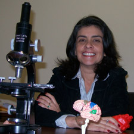
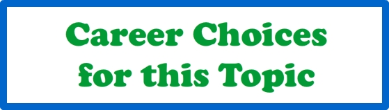

|
April 2011
Are you the type of person that needs to touch everything? Sometimes it feels like we must touch to see better...doesn't it? It's fascinating to learn about how our human bodies connect to the world. Do you think the world is what we see? The answer is, "NO!" There are many more "things" in the world than our senses could possibly detect! In this interactive session we will be discussing and experiencing the Special Senses. Have you ever wondered: Why do we have two eyes on our faces? Or, why do we have two ears on our heads? And why do we stop feeling our clothes after a while? Or why can we not smell our perfume all day? Those and more questions will be answered in our interactive session. Let's explore together how our human body connects to the outside environment and learn more about the intriguing world of Human Function."Why do we want to touch everything with our fingertips? And more 'Why' questions about how our bodies communicate with the world." An interactive session led by Dr. Helena Carvalho Assistant Professor of Basic Sciences, Virginia Tech Carilion School of Medicine and Research Institute  Dr. Helena Carvalho is a Physiologist with many years of experience in basic sciences and worked with microcirculation research for more than 20 years. She was the recipient of Pappenheimer Postdoctoral Fellow Award offered by American Physiological Society and the best presentation at ENCENF (Rio de Janeiro, Brazil). After teaching medical students and undergraduate for many years she turned her interest on How People Learn (HPL) with emphasis on teaching strategy that promote a lifelong learning experience for all levels of students. She is currently writing a Physiology manual with practical exercises with focus on Hands-on activities. The goal is to explore the student natural curiosity and achieve a genuine interest on science. Dr. Carvalho is currently an Assistant Professor in Basic Sciences at the Virginia Tech Carilion School of Medicine and Research. |